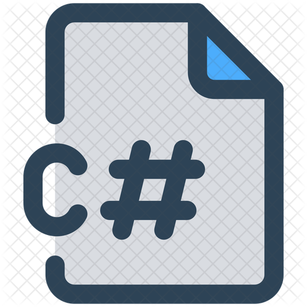

<!DOCTYPE html>
<html lang="en">

<head>
    <meta charset="UTF-8">
    <meta name="viewport" content="width=device-width, initial-scale=1.0">
    <meta http-equiv="X-UA-Compatible" content="ie=edge">
    <link rel="stylesheet" href="index.css">
    <title>PWebAtividade3</title>
</head>

<body>
    <!-- ... (seu conteúdo HTML) ... -->
</body>

</html>
</head>

<body background="imagem/fat.jpg" "#483D8B" LINK="#00FF00" vlink="#8A2BE2" alink="#DC143C">
    <header>
        <!-- ... ( cabeçalho) ... -->

        <h1>
            <astrog>Atividade 3 pesquisa PWeb</astrog>
        </h1>
        <p>
            Linguagens de programação back-end são usadas para desenvolver a
            lógica, o processamento e a gestão de dados por trás das aplicações web.<br>
            lidam com tarefas como interações com bancos de dados, processamento de
            formulários, autenticação de usuários e outras funcionalidades que não são
            visíveis aos usuários finais.<br> Abaixo, será apresentado alguns exemplos de
            linguagens de programação back-end e suas aplicações:
        </p>
    </header>

    <nav>
        <ul>
            <p>
                <strog>Menu navegação</strog>
            </p>
            <li><a href="#python"><strong>Python</strong></a></li>
            <li><a href="#java"><strong>Java</strong></a></li>
            <li><a href="#ruby"><strong>Ruby</strong></a></li>
            <li><a href="#php"><strong>PHP</strong></a></li>
            <li><a href="#nodejs"><strong>Node.js</strong></a></li>
            <li><a href="#csharp"><strong>C#</strong></a></li>
            <li><a href="javascript:history.back()">ReturnAqui</a></li>
        </ul>
        <nav>
            <ul>
                <a href="https://github.com/Jaquiel-Moreno"> github Jaquiel-Moreno</a>
            </ul>
        </nav>
    </nav>

    <section id="python">
        <!-- ... (conteúdo sobre Python) ... -->
        <h2>Python:</h2>
      
        <p> 
            Aplicações: Python é frequentemente usado para desenvolver aplicações
            web usando frameworks como Django e Flask. Ele é conhecido por sua
            legibilidade e facilidade de aprendizado, tornando-o uma escolha popular para
            startups e projetos menores.<br>
            Características: Python é versátil e pode ser utilizado em diversos cenários,
            desde aplicações web até automação de tarefas e análise de dados.
            
        </p>
        
       

    </section>

    <section id="java">
        <!-- ... (conteúdo sobre Java) ... -->
        <h2>Java:</h2>
        <p>Aplicações: Java é amplamente usado em sistemas empresariais e
            aplicações de grande escala. Ele é conhecido por sua portabilidade, o que
            significa que as aplicações Java podem ser executadas em diferentes
            plataformas.<br>
            Características: Java é orientado a objetos e oferece uma grande quantidade de
            bibliotecas e frameworks, como Spring, que facilitam o desenvolvimento de
            aplicações complexas.
        </p>
        
        <br>
    </section>

    <section id="ruby">
        <!-- ... (conteúdo sobre Ruby) ... -->
        <h2>Ruby:</h2>
        <p>Aplicações: Ruby é muitas vezes utilizado em combinação com o
            framework Ruby on Rails, que é especialmente adequado para o
            desenvolvimento rápido de aplicações web com ênfase na convenção sobre
            configuração.
            Características: Ruby é elogiado por sua sintaxe limpa e elegante, o que pode
            acelerar o desenvolvimento. No entanto, sua performance pode ser um desafio
            em aplicações de alta carga.
        </p>
        
    </section>

    <section id="php">
        <!-- ... (conteúdo sobre PHP) ... -->
        <h2>PHP:</h2>
        <p>Aplicações: PHP é amplamente utilizado para desenvolver aplicações web
            e é uma das linguagens mais antigas e populares para esse fim. É
            frequentemente utilizado em conjunto com sistemas de gerenciamento de
            conteúdo (CMS) como WordPress e Joomla.
            Características: PHP é projetado especificamente para o desenvolvimento
            web e possui muitas bibliotecas e frameworks disponíveis. No entanto, sua
            sintaxe e características podem ser consideradas menos modernas em
            comparação com outras linguagens.
        </p>
        
        <br>
    </section>

    <section id="nodejs">
        <!-- ... (conteúdo sobre Node.js) ... -->
        <h2>Node.js (JavaScript):</h2>
        <p>
            Aplicações: Node.js permite que os desenvolvedores usem JavaScript no
            lado do servidor. Ele é altamente eficaz para aplicações em tempo real, como
            chat em tempo real e streaming de dados.
            Características: Node.js é baseado no mecanismo de JavaScript V8 da
            Google e é projetado para ser não bloqueante, permitindo que muitas conexões
            sejam manipuladas simultaneamente.
        </p>
        
        <br>
    </section>

    <section id="csharp">
        <!-- ... (conteúdo sobre C#) ... -->
        <h2>C#:</h2>
        <p>

            Aplicações: C# é comumente usado para desenvolver aplicações web na
            plataforma .NET da Microsoft. Ele também é utilizado para desenvolvimento de
            jogos, aplicações de desktop e muito mais.
            Características: C# é altamente integrado com o ecossistema da
            Microsoft e é especialmente popular para o desenvolvimento de aplicações
            corporativas e jogos com o uso da Unity Engine.
            A escolha da linguagem de programação back-end dependerá das
            necessidades específicas do projeto, da experiência da equipe de
            desenvolvimento e dos objetivos da aplicação. Cada linguagem tem suas
            vantagens e desvantagens, e a escolha certa dependerá das características do
            projeto em questão
        </p>
          
    </section>

</body>

</html>